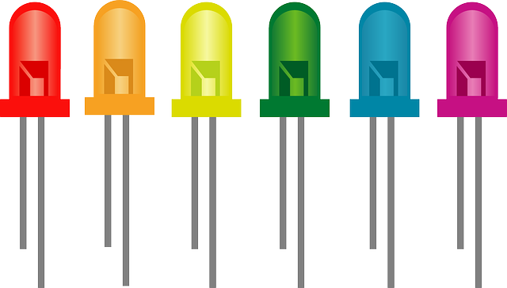

GPIO

Introdução
Trabalhar com General Purpose Input Output (GPIO) no Linux não é a coisa mais simples do mundo, quando é a primeira vez que você vai utiliza-los. Por isso, achei interessante compartilhar esses passos.
Gostaria agradecer ao Cristiano Goes pelo suporte.
Nota
Se quiser se aprofundar mais um pouco, existe o curso Embedded Linux Step by Step Using Beaglebone Black que na seção 15 dá mais detalhes sobre o que será explicado aqui.
O Kernel
Precisamos checar como os GPIOs foram configuradas dentro do Kernel Linux. Por se tratar de uma configuração, elas devem estar dentro do Device Tree Source (DTS) da placa. Fazendo uma busca, encontrei o arquivo:
#include <dt-bindings/input/input.h>
#include <dt-bindings/leds/common.h>
#include <dt-bindings/gpio/meson-g12a-gpio.h>
#include <dt-bindings/sound/meson-g12a-tohdmitx.h>
O arquivo meson-g12a-gpio.h se encontra em include/dt-bindings/gpio/meson-g12a-gpio.h. O arquivo divide os GPIOs em 2 grupos:
-
First GPIO chip
/* First GPIO chip */ #define GPIOAO_0 0 #define GPIOAO_1 1 #define GPIOAO_2 2 #define GPIOAO_3 3 ... -
Second GPIO chip
/* Second GPIO chip */ #define GPIOZ_0 0 #define GPIOZ_1 1 #define GPIOZ_2 2 #define GPIOZ_3 3 #define GPIOZ_4 4 ...
Grupo 1
O primeiro grupo possui os bancos:
- GPIOAO de 12 bits
- GPIOE com 3 bits.
Grupo 2
O segundo grupo é maior, com vários bancos:
GPIOZde 16 bitsGPIOHde 9 bitsBOOTde 16 bitsGPIOCde 8 bitsGPIOAde 16 bits (não confundir comGPIOAOdo primeiro grupo)GPIOXde 20 bits
Mapeando os pinos
As GPIOs disponíveis no sistema estão no caminho /sys/class/gpio/, na VIM 3 podemos encontrar os seguintes items:
$ ls /sys/class/gpio
export gpiochip412 gpiochip427 unexport
O export serve para ativar um GPIO e o unexport para desativar. Os itens gpiochip412 e gpiochip427 são referentes aos 2 grupos mostrados anteriormente.
Para os mais curiosos, esses 2 grupos foram criados dentro do arquivo
drivers/pinctrl/meson/pinctrl-meson-g12a.c. Nas estruturasmeson_g12a_periphs_pinctrl_dataemeson_g12a_aobus_pinctrl_data
Utilizando o comando ls -l, podemos observar que esses 2 grupos estão associados a outras pastas:
$ ls -l
total 0
--w------- 1 0 0 4096 Jan 1 00:00 export
lrwxrwxrwx 1 0 0 0 Jan 1 00:00 gpiochip412 -> ../../devices/platform/soc/ff800000.bus/ff800000.sys-ctrl/ff800000.sys-ctrl:pinctrl@14/gpio/gpiochip412
lrwxrwxrwx 1 0 0 0 Jan 1 00:00 gpiochip427 -> ../../devices/platform/soc/ff600000.bus/ff634400.bus/ff634400.bus:pinctrl@40/gpio/gpiochip427
--w------- 1 0 0 4096 Jan 1 00:00 unexport
O GPIO gpiochip412 está associado ao ff800000.sys-ctrl e o gpiochip427 está associado ao ff634400.bus.
Atenção
Para o passo a seguir, certifique-se de que o debugfs está montado.
Até esse momento não sabemos identificar os GPIOs que estão dentro do arquivo include/dt-bindings/gpio/meson-g12a-gpio.h. Para auxiliar nisso, podemos ir para o caminho /sys/kernel/debug/pinctrl/. Nesse caminho temos os seguintes itens
$ ls /sys/kernel/debug/pinctrl/
ff634400.bus:pinctrl@40-pinctrl-meson
ff800000.sys-ctrl:pinctrl@14-pinctrl-meson
pinctrl-devices
pinctrl-handles
pinctrl-maps
Os mesmos nomes que estão associados aos gpiochips* aparecem aqui. Podemos ver o conteúdo do arquivo pins. Por exemplo,
$ cat ff800000.sys-ctrl:pinctrl@14-pinctrl-meson/pins
registered pins: 15
pin 0 (GPIOAO_0) 0:aobus-banks ff800000.sys-ctrl:pinctrl@14
pin 1 (GPIOAO_1) 1:aobus-banks ff800000.sys-ctrl:pinctrl@14
pin 2 (GPIOAO_2) 2:aobus-banks ff800000.sys-ctrl:pinctrl@14
pin 3 (GPIOAO_3) 3:aobus-banks ff800000.sys-ctrl:pinctrl@14
pin 4 (GPIOAO_4) 4:aobus-banks ff800000.sys-ctrl:pinctrl@14
pin 5 (GPIOAO_5) 5:aobus-banks ff800000.sys-ctrl:pinctrl@14
pin 6 (GPIOAO_6) 6:aobus-banks ff800000.sys-ctrl:pinctrl@14
...
No caminho ff800000.sys, que está associado ao gpiochip412, estão registrados 15 pinos e em seguida aparece o nome dos pinos registrados. Dessa forma, agora sabemos que o gpiochip412 é referente ao grupo 1.
Fazendo o mesmo para o ff634400.bus:
$ cat ff634400.bus:pinctrl@40-pinctrl-meson/pins
registered pins: 85
pin 0 (GPIOZ_0) 0:periphs-banks ff634400.bus:pinctrl@40
pin 1 (GPIOZ_1) 1:periphs-banks ff634400.bus:pinctrl@40
pin 2 (GPIOZ_2) 2:periphs-banks ff634400.bus:pinctrl@40
pin 3 (GPIOZ_3) 3:periphs-banks ff634400.bus:pinctrl@40
pin 4 (GPIOZ_4) 4:periphs-banks ff634400.bus:pinctrl@40
...
E confirmamos que está associado ao grupo 2.
Ativando um GPIO
Vamos supor que queremos utilizar o GPIO GPIOH_4 (que está no grupo 2). Já sabemos que ele está associado ao gpiochip427, mas precisamos de 2 informações importantes, saber qual é a base
e o offset.
A base, podemos conseguir por meio do comando:
$ cat /sys/class/gpio/gpiochip427/base
427
O comando retorna o número 427 (sim, o nome do gpiochip é concatenado com a base). O offset pode ser obtido por meio do arquivo include/dt-bindings/gpio/meson-g12a-gpio.h ou checando os pins pelo /sys/kernel/debug/pinctrl/. Nesse caso, o GPIO GPIOH_4 tem o offset 20.
Nota
Podemos fazer um paralelo, dizendo que a base é como se fosse a rua da sua casa e o offset é número da casa.
Agora basta somar a base + offset = 427 + 20 = 447.
Com isso, digitar o comando:
echo 447 > /sys/class/gpio/export
Checando novamente a pasta
$ ls /sys/class/gpio/
export gpio447 gpiochip412 gpiochip427 unexport
Agora temos o gpio447 pronto para uso.
Usando o GPIO
Antes de utilizarmos um GPIO, precisamos saber se ele está "externado", ou seja, se ele está disponível para uso na placa. Para saber quais os GPIOs estão disponíveis para uso, devemos consultar o esquemático da placa, para a VIM3 temos os seguintes pinos:

Esses são os 40 pinos que estão disponíveis na placa.
Podemos observar que o pino 37 é o GPIOH_4, que foi o mesmo que ativamos anteriormente. Acessa esse GPIO, temos:
# ls /sys/class/gpio/gpio447/
active_low direction subsystem value
device power uevent
Por hora, vamos dar enfaze em direction e value. O direction é responsável por definir se o GPIO será de entrada ou saída, para saber o estado atual, basta checar o seu conteúdo:
# cat /sys/class/gpio/gpio447/direction
out
Nesse caso, o GPIOH_4 está setado para saída (mas poderia estar setado para entrada in). Para exemplificar, vamos utilizar um LED, sendo necessário que o GPIO esteja setado para saída.
Nota
Para alterar a direção do GPIO, basta utilizar o comando echo. Por exemplo: echo in > direction ou echo out > direction
Agora precisamos configurar seu valor para high ou low. Isso é feito por meio do arquivo value, para checar o valor atual:
# cat /sys/class/gpio/gpio447/value
0
Nesse caso, o valor atual é low. Para mudar para high, podemos utilizar o comando:
# echo 1 > /sys/class/gpio/gpio447/value
Por fim, uma vez que já sabemos ligar e desligar um LED, podemos gerar um shell script para fazermos o blink:
# while ( true ); do
echo 1 > /sys/class/gpio/gpio447/value;
sleep .5;
echo 0 > /sys/class/gpio/gpio447/value;
sleep .5;
done;

Conclusão
Foi feito um overview de como encontrar um GPIO e como utiliza-lo. Como cada placa possui SOCs diferentes, os nomes dos GPIOs serão diferentes, mas o processo de busca é o mesmo. Um erro pode ocorrer na hora de exportar (ativar) um GPIO caso o Kernel já esteja fazendo uso do mesmo, por isso, é preciso analisar os pinos que serão configurados.